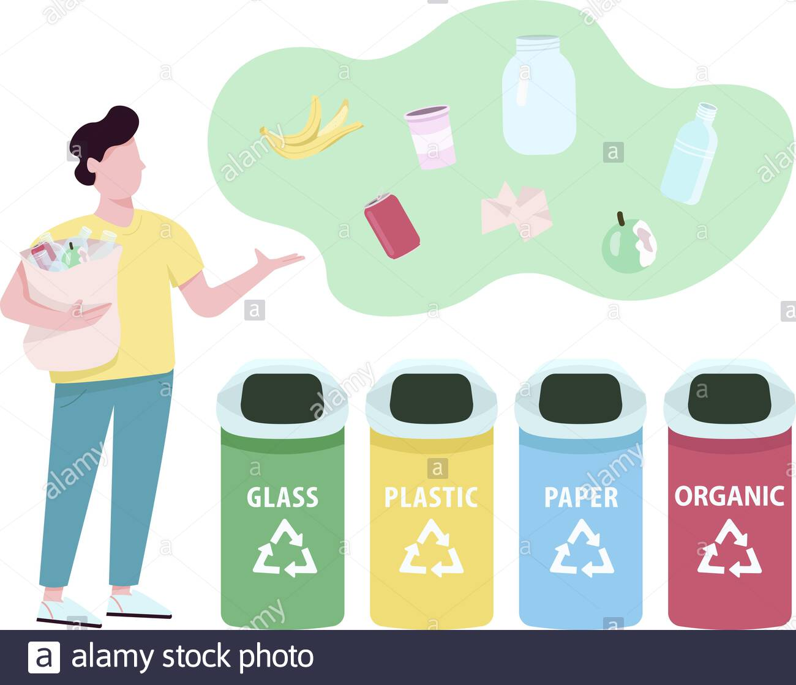

Su medio ambiente
El Salvador es un país que se encuentra en la zona de América Central, es un país con un clima tropical, es decir, es cálido. Por tal razón, ofrece mucha abundancia en la vegetación y existen diferentes hábitats en zonas del país. En el Ecosistema pueden encontrase con una variedad de ambientes, desde bosques hasta zonas muy aridas, existentes mayormente en zonas fronterizas del oriente del pais. Hay lugares que le toman mucha importancia a la preservacion de la vegetacion, uno de ellos es el Jardin Botanico "La Laguna", ubicado en el plan de la laguna, antiguo Cuscatlan. El lugar conciste en un area protegida para la preservacion de varias especies de plantas, es conocido como el pulmon del pais.
¿Que debemos saber del medio ambiente?
es un sistema formado por elementos naturales y artificiales que están interrelacionados y que son modificados por la acción humana. Se trata del entorno que condiciona la forma de vida de la sociedad y que incluye valores naturales, sociales y culturales que existen en un lugar y momento determinado.Conoscamos las areas naturales protegidas de El Salvador
Entre ellas tenemos

- Parque Nacional El Boqueron.
- Los Chorros de la Caldera.
- Parque Water Deininger.
- Parque Nacional Monte Crsito.
- Arrecife los Cobanos.
- Volcan Tecapa y la Laguna de Alegria
- La puerta del Diablo
- Parque los Andes
- Parque Nacional Los Volcanes
- Cerro el Pital
- Parque Nacional Cerro Verde
- Bosque de Chaguantique
- Golfo de Fonseca
- Lago de Ilopango
- Jardin Botanico la Laguna
- Rio Sapo
¿Por que debemos de cuidar el Medio Ambiente?
Es nuestro hogar
Quizás la más importante de las razones para cuidar el medio ambiente, es que hacemos vida en él. Siendo la tierra nuestro hogar, es responsabilidad nuestra el daño que le hemos causado, así como repararlo. Los asentamientos urbanos se han incrementado a un ritmo nunca antes visto en la historia de la humanidad, lo cual, lógicamente, ha significado una destrucción acelerada de ecosistemas naturales. Es por eso que deben buscarse soluciones para reparar esta destrucción e intentar restaurar el equilibrio medio ambiental.
Sustentabilidad de la vida
La vida en la tierra esmuy frágil, los más pequeños cambios pueden causar estragos en el medio ambiente. Si problemas como la contaminación o la deforestación no son resueltos, la vida en la tierra podría no ser sustentable. La polución es un buen ejemplo de cómo el ser humano afecta su propia vida en la tierra, la liberación de elementos tóxicos en la atmósfera puede llevar a condiciones donde el ser humano no sobreviviría (catástrofes naturales o contaminación extrema del aire).
Crecimiento de la población
La población mundial ha crecido aceleradamente desde el siglo XX, esto significa que no sólo necesitamos más espacio para vivir, sino para la producción de más elementos para nuestro sustento. Varios estudios indican que la destrucción del medio ambiente en una época con un crecimiento poblacional tan alto, podría generar un déficit de elementos naturales (animales, plantas) necesarios para la vida humana. Con sobrepoblación, los recursos podrían acabarse dando paso a una hambruna sin precedentes en la historia del planeta.
Biodiversidad
La contaminación y destrucción de hábitats, ha generado la extinción de muchas plantas y animales. Actualmente cientos de especies se encuentran en peligro de desaparecer, principalmente debido a afectos del ser humano. Perder la biodiversidad implica romper con ciclos naturales muy delicados y vitales para la vida, como la polinización. Además las cadenas alimentarias perderían su equilibrio, causando sobrepoblación de especies que podrían ser perjudiciales para el hombre. A nivel cultural, la extinción de una especie animal o vegetal indica decadencia en la conservación de la vida.
Datos Interesantes
¿Como es la situacion alctual del medio ambiente en El Salvador?
Las y los ambientalistas de El Salvador manifiestan la crisis ambiental, en la falta de agua, contaminación, deforestación; brindando datos sobre la cantidad de bosque en el país, que tiene el 37% cobertura boscosa, la cual consideran que es poco, debido a la poca recarga acuífera, y porque es el país con menos acceso al agua en la región Centroamericana, ocasionando que cada vez haya ríos que pierden nivel en su caudal y se convierta en quebrada seca.
¿Cuantos tipos de bosques hay en El Salvador?
Según el inventario, el total de masa forestal es de 799,209 hectáreas, lo que cubre el 37.9 % del territorio salvadoreño, “nada mal para un país de 21 mil kilómetros cuadrados y una población que supera los 6.5 millones de personas”.
Estos son los tipos de bosques que tiene el salvador
1. Bosque Secundario
Se encuentra a lo largo del territorio salvadoreño. Es el que más predomina sobre el resto. Cubre 463,714 hectáreas, lo que equivale al 21.99 % del territorio salvadoreño. Los bosques secundarios se caracterizan por tener vegetación leñosa que se desarrolló una vez que la vegetación original fue eliminada por actividades humanas o fenómenos naturales.
2. Cafetal bajo sombra
Es la combinación de diferentes árboles y cultivos de café, sobre todo en tierras altas y fértiles. En El Salvador cubre un total de 174,834 hectáreas, el 8.29 % del territorio total del país.
3. Bosque Perennifolio Maduro
Son los que tienen árboles con hojas perennes, es decir que mantienen su follaje durante todo el año. En el país hay 62,988 hectáreas con este tipo de forestación, pero representa apenas el 2.99 % del territorio.
4. Bosque salado/mangle
Se encuentran en la bahía de La Unión, El Tamarindo, el Cuco, la bahía de Jiquilisco, Jaltepeque, Santa Clara, San Diego, El Amatal, Barra Salada, Acajutla, Metalío, Barra de Santiago, El Zapote, Garita Palmera y la bocana del río Paz, según datos del MARN.
5. Bosque caducifóleo maduroe
Tiene una variedad de árboles cuya característica es que pierden sus hojas en algunas estaciones. Su extensión en El Salvador es pequeña, de 36,549 hectáreas, el 1.73 % del territorio.
6. Bosque de coníferas
Es el más escaso de todos en el país, con el 1.01 % de cobertura, unas 21,318 hectáreas. Tiene árboles como pino, cipreses, abetos, entre otros en forma de cono.
Fotografias
1. Bosque Secundario
2. Cafetal bajo sombra
3. Bosque Perennifolio Maduro
4. Bosque salado/mangle
5. Bosque caducifóleo maduroe
6. Bosque de coníferas
¿Que hace El Salvador para proteger el medio ambiente?
Con la asistencia del Fondo para el Medio Ambiente Mundial (FMAM), el proyecto actualizó la estrategia y el plan de acción nacional para consolidar y gestionar el Sistema de Áreas Naturales Protegidas y los puso a prueba en dos áreas piloto protegidas. El proyecto impidió la deforestación y promovió la regeneración en más de 20.207 hectáreas. Se delinearon las áreas protegidas de ambos programas y se redujeron los conflictos por tenencia de la tierra. Las inversiones en capacitación y en modos de subsistencia alternativos beneficiaron a los grupos solidarios y a las cooperativas locales, y fortalecieron su apoyo a la conservación de la biodiversidad.
¿Cuando se fundo la ley de medio ambiente en El Salvador?
La Ley del Medio Ambiente promulgada en 1998, tiene por objeto desarrollar las disposiciones de la Constitución de la República relativas a la protección, conservación y recuperación ambiental; busca, además, asegurar el uso sostenible de los recursos naturales que permitan mejorar la calidad de vida de las presentes y futuras generaciones.
"
¿Como podemos cuidar el medio ambiente?
Te dejamos algunos consejos:
1. Separa la basura
1. Separa la basura
Reciclar es muy importante, tanto así que en Madrid, se ha dispuesto de una campaña, denominada “Acierta con la orgánica”, que busca que los habitantes de aproximadamente 12 distritos de la capital, separen sus residuos orgánicos y estos sean depositados en un contenedor de tapa color marrón. Con esto la administración busca que en 2020 el 50% de los residuos domésticos y comerciales, puedan ser destinados para la reutilización y el reciclaje.

2. Apaga las luces
Acostumbrarse a apagar las luces que no estamos utilizando también es una acción que todos en casa y en el trabajo podemos poner en marcha y, desde luego, utilizar la luz del día puede reducir el consumo energético en nuestros hogares.
3. Evita dejar los paratos enchufados
El cargador del móvil, la televisión, el PC, entre otros aparatos, que cuando están apagados siguen consumiendo energía, por eso cuando no estén en uso, es importante desenchufarlos.
4. Cierra los grifos correctamente y cuida el agua
Ahorra y usa de una forma eficiente el agua cerrando el grifo, y controla que no existan fugas. Para la ONU, el agua es el epicentro del desarrollo sostenible y el desarrollo socioeconómico mundial y señala que hasta la fecha la escasez de agua ya afecta a 4 de cada 10 personas.
separar45. Lleva tus propias bolsas al supermercado
Ahora en casa o en el trabajo las bolsas reutilizables abundan, así que llevar una al supermercado no es una difícil tarea. Algo que sin duda nos puede hacer recordar que debemos evitar el uso de bolsas de plástico, ya que la producción de estas, requiere la utilización de aproximadamente 12 millones de barriles de petróleo, su degradación tarda aproximadamente 20 años. Generar pequeñas acciones desde nuestros hábitos diarios, puede suponer grandes y positivos cambios al planeta tierra y la tecnología de la Bomba de Calor, contribuye significativamente a ello.
Cuidar a la naturaleza es cuidar a las personas